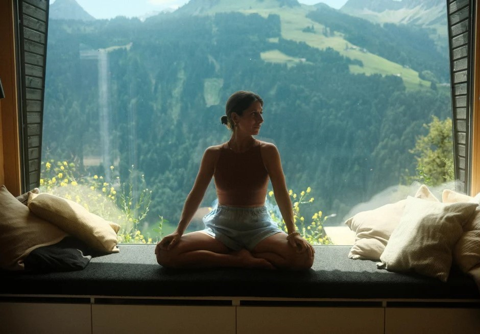
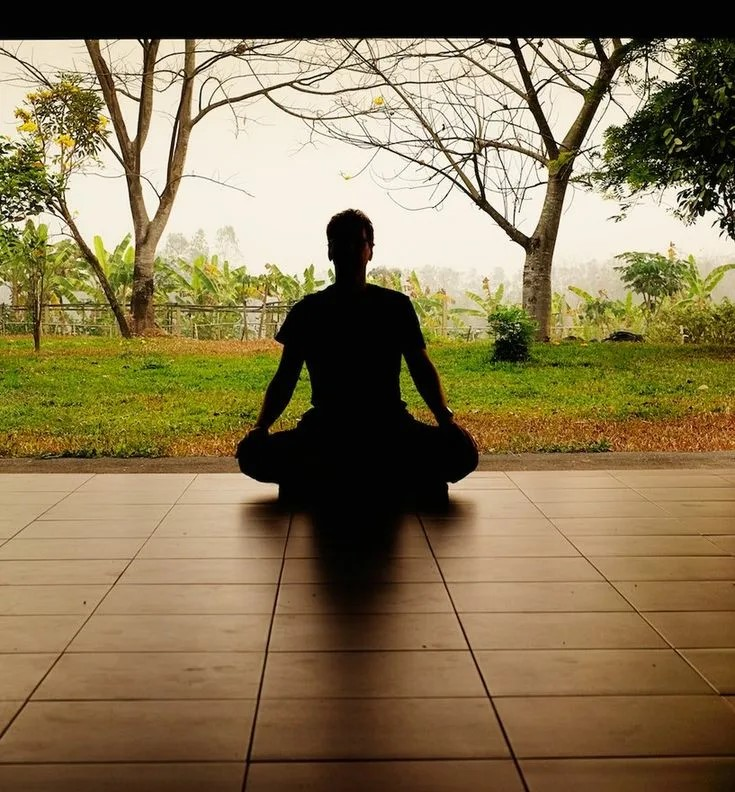
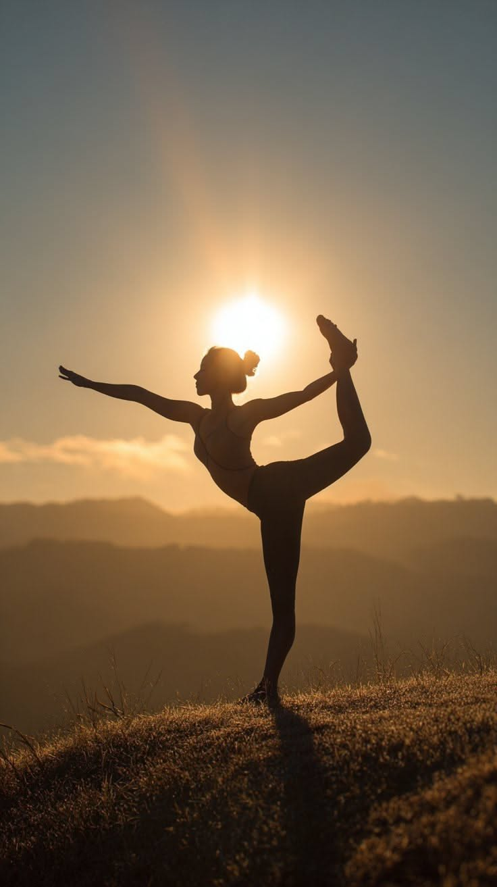

Мои любимые техники медитации



Сравнение техник
| Техника | Длительность | Сложность | Для кого |
|---|---|---|---|
| Випассана | 10-30 мин | ⭐⭐ | Начинающие |
| Любящая доброта | 10-15 мин | ⭐⭐⭐ | Для снятия гнева |
| Сканирование тела | 20-45 мин | ⭐⭐ | Для снятия напряжения |
| Мантра | 5-20 мин | ⭐ | Для всех |
ТОП-5 советов для начинающих
- Начните с 3 минут в день
- Выберите тихое место
- Не оценивайте мысли — просто наблюдайте
- Используйте подушку для сидения
- Занимайтесь регулярно, а не долго